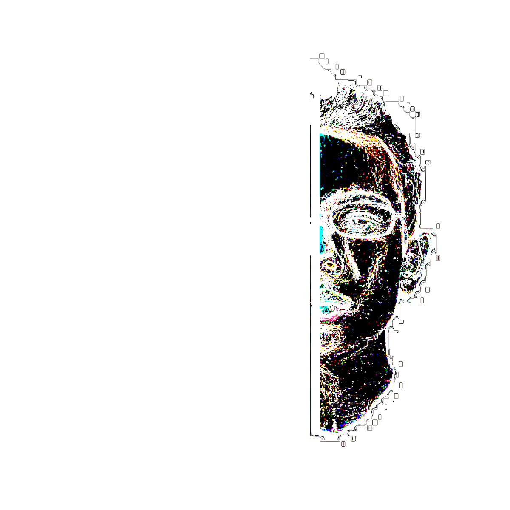

 x
x
Quiesci
Passage into a realm of phat beats and bright synths; a taste of the future of music.
spotlight mix
special mix
4.16.16
- Swedish House Mafia Vs. Coldplay - Every Tear Drop Is A Waterfall
- Swedish House Mafia - Save the World (Knife Party Remix)
- Swedish House Mafia - Don't You Worry Child (feat. John Martin) (Promise Land Remix)
- Dirty South & Alesso - City of Dreams (feat. Ruben Haze)
- Dirty South - Find A Way (Anevo remix)
- Zedd - Beautiful Now (feat. Jon Bellion) [Dirty South Remix]
- Smallpools - Dreaming (Zookëper Remix)
- Ryzu & Unison - Azure
- Morgan Page ft. Angelika Vee - Safe Till Tomorrow (Pegboard Nerds Remix)
- Kaskade ft. Ilsey - Disarm You (Project 46 Mix)
- Axwell/\Ingrosso - Sun Is Shining (M-22 Remix)
- Daddys Groove - Pulse (Color Source Remix)
2.20.16
Featuring a special mix by Ramzoid.
- Tennyson - Like What?
- Xander Lewis - Rose Petals
- GOLDWATER - lotus
- casual - wherewereu
- Whispa - shinobi flow
- whereisalex - playing around before church starts.
- kagwe - open sesame
- graves & Havok Roth - Imaginary Friends
- Louis The Child - It's Strange (Ramzoid Remix)
- Sango - l1 (Kaytranada x Mr. Carmack)
- Mr. Carmack - ROCK DEM
- Ramzoid - Volcano Zone
- Panama - Jungle (Chrome Sparks Remix)
- Kendrick Lamar - Wesley's Theory (DrewsThatDude x GRAVEZ x oriJanus x TEK.LUN x Zikomo Remix)
- Ramzoid - ID
- Ramzoid - Turtle Theme
- Kaaris - Chargé (Ramzoid Edit)
- SINIQ - Silicon Valley
- Ramzoid - ID
- Tsuruda - Zac's Demise
- Hermitude - Hyperparadise (Flume Remix)
- Monuman - Nothing More
- X&G - Whiplash ft. Josh Pan
- Ramzoid - Hotline Bling (Drake Cover)
- Dr Derg. - Depression (Ramzoid Edit)
- LTGL - Orangutan
- Arian Cook - ID
- Braeden Bailey - Death, From Above
- Ramzoid - ID
- Ramzoid - ID
2.13.16
- FLAGZ - Shards
- Enschway & Kuren - Taking Hold
- Enschway - Papercut
- Myrne & Awoltalk - Sanctum
- Ke-Chi x Icarus Moth - Moon Children
- Holly & KVN - Gallant
- UZAGI - IRON
- Whispa - Ezio
- THRDEYE - CANT SLEEP
- graves x Audiobot - Dope
- graves x Debroka - Silver Fox
- saken - 003
- Revazz & Holly - Fissure
- Creepa - Todos
- Lido - I <3 you (graves flip v2.0)
- Gill Chang - Anubis
- Losi - Noble
2.6.16
- BLU J - I RMMBR
- Kuso Kurae - See U Again
- Gallant - Weight in Gold (Louis Vivet Remix)
- Galantis - Runaway (U & I) (Subtact Remix)
- Flume - Smoke & Retribution (Ekali Remix)
- MGMT - KIDS (LUCA LUSH REDO)
- Madeon - Pay No Mind (feat. Passion Pit) [Lemaitre Remix]
- SG Lewis - Shivers (Delusion Remix)
- G-Eazy & Bebe Rexha - me myself and i (no sleep remix)
- flume - never be like you feat. kai (gill chang EDIT)
- CHVRCHES - The Mother We Share (Moon Boots Remix)
- Louis The Child (ft. K. Flay) - It's Strange (Mr FijiWiji Remix)
- pools - Traffic Lights (TRAILS Flip)
1.30.16
- KOAN Sound x Culprate x Asa x Opiuo - If You Hadn't
- capt. pizza - MISERY
- OBESON - Friend to an Enemy
- Orygin - Roots
- Saturn - Looking Glass
- GOLDWATER - Thinking
- tekvision - Lament
- Swindail - Gellaitry Groove (Traxell Remix)
- Whispa - Hamara
- Kuiters - Tidbit
- XELΛRΛIN - EgoDeath
- ANTI-HERO & Atura - Distant
- Mura Masa - Firefly (Ramzoid Remix)
- Ryan Hemsworth - Gods (with UV boi)
1.23.16
- Nigel Good - Space Plus One
- Rootkit - Elevate
- BENJI - Never Love
- Tut Tut Child - I Can't
- Throttle x Earth, Wind, and Fire - September
- Odesza - All We Need (Haywyre Remix)
- Years & Years - King (Anevo Remix)
- J'Adore - Standing Man
- Stulp Fiction - Shroom
- Florence and The Machine ft. Candi Staton - You Got The Love (Mr Saccardo Remix)
- Sia - Elastic Heart (Mats Gulbrandsen vs. Cosmic Dawn Remix)
- Vivid - Fear
1.16.16
- KVN - Tribes
- KVN - Barren
- Swindail - Dunk
- kagwe - solo strollo
- KRNE x Traxell - Initiation [SESSIONS_01.2]
- West Metro x Rhoda - Vanilla ft. Austin Jones
- Immunity - Define Light
- Jupe - ILY
- Avionics - Vertigo
- Alejandro - Whirlwind
- Romos - Helios
- Krysmic - Bittersweet
- Just A Gent - Waveless
- Vulpey - Mango Pop
- graves & Jupe - VHS
- Madeon - Innocence ft. Aquilo (Daydreamer Remix)